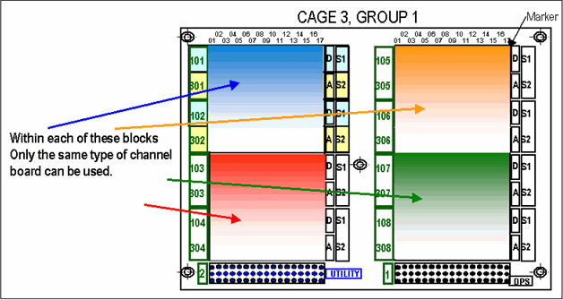

DC-DC granularity
The DC-DC cards supply power to the channel cards in the card cages.
For the A, Compact, Small and Large test heads, you cannot place Pin Scale and DC Scale cards in adjacent slots powered by the same DC-DC card. The reason is that the DC-DC power subsystem auto-configures the supply voltages to meet the respective power demands. For a complete list see Card compatibility.
The figure below shows how this looks in practice:

Functional changes
- Introduced before SmarTest 6.3.2